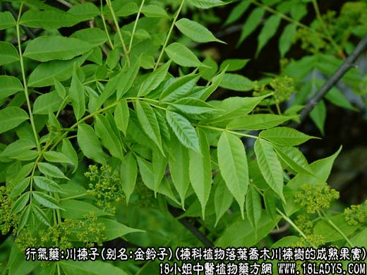
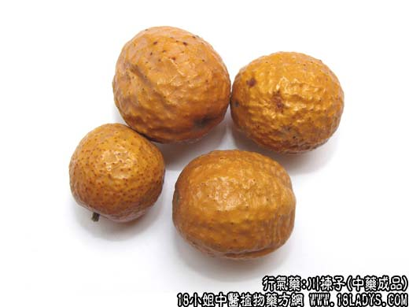
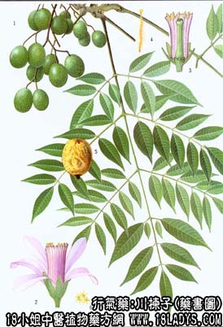

川楝子为常用中药。始载《神农本草经》，列为下品。原名“楝实”，不分川楝、苦楝。《图经本草》始称楝实，以蜀产者为佳。现商品有川楝子与苦楝子两种，药用以川楝子为主。
别名：金铃子、川楝实。
来源：为楝科植物落叶乔木川楝树的成熟果实。野生或栽培。
产地：主产于四川、云南、贵州、甘肃等地。
性状鉴别：果实圆球形或椭圆球形，直径1.7~2.5厘米。表面黄棕色，有光泽，微有皱缩，具深色小点。果实一端有一圆形凹陷，为果柄脱落的痕迹，另一端有一棕色点状的花柱基痕。果皮革质，与果肉间常有空隙。果肉黄至暗黄色，略虚软。果核或呈卵圆形，木质坚硬，表面有6~8条纵棱，内有黑色棕色长圆形的种子6~8枚。种仁乳白色，长圆形有油性。气特异，味酸苦。
以个大饱满，色黄，肉厚而虚软者为佳。
主要成分：含挥发性脂肪酸，为醋酸及己酸。
功效与作用：1、行气止痛。2、驱虫，体外试验对猪蛔虫有杀灭作用，但临川应用驱虫功效不及川楝皮。3、抗真菌。体外试验队铁锈色小芽胞癣菌有抑制作用。又川楝子的醇浸液对白色念珠菌、新生隐球菌呈较强的抑制作用（水浸液和煎液的抑菌作用则较差）。
炮制：串碎，生用。
性味：苦、寒，有小毒。
归经：入心、肝、小肠、膀胱经。
功能：清肝火，除湿热，止痛，杀虫。
主治：热症脘腹胁肋诸疼，疝气及虫积等症，熬膏外敷治秃疮。
临床应用：为治疗各种热性腹痛的常用药。镇痛效果比较确实可靠。
1、用于治疗肝气郁滞、肝胆火盛所致的腹痛、胁痛。其痛为胀痛、闷痛性质，时发时止，并伴有情绪焦躁、睡觉不佳、食欲差、舌红绛、脉弦数。多见于慢性肝炎，尤其肝区疼痛，自觉痛处有热者更适用。此时，川楝子有疏泄肝热而解郁止痛的作用，常配延胡索等分同用，即金铃子散，或在疏肝和胃方剂内加入一味川楝子。对于解肝郁胁痛的作用，川楝子比青皮好。
2、用于治疗疝痛。因换睾丸鞘膜积液、附睾炎、小肠疝气等引起的局部疼痛，牵引至脐腹者，常配吴茱萸、小茴香等同用，方如导气汤。
3、用于治疗虫积腹痛。主要取其镇痛作用，但杀虫效力不大，要配其他驱虫药如槟榔、雷丸等。
4、用于治疗头癣。以川楝子单味烤黄研末，与等量猪油拌成油膏外擦患处。川楝子有松动头发和抑制癣菌的作用，故有一定近期疗效。
使用注意：川楝子能致便溏，肠胃虚寒者不宜服用。
用量：4.5~12g分量不宜过大。
处方举例：1、金铃子散（《圣惠方》）：金铃子（川楝子）、延胡索各60g，研末，每服6g，温开水送服。